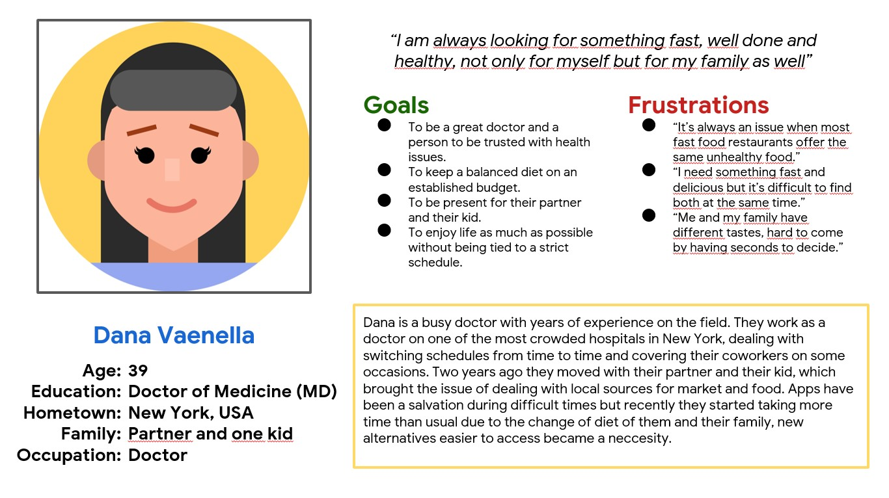
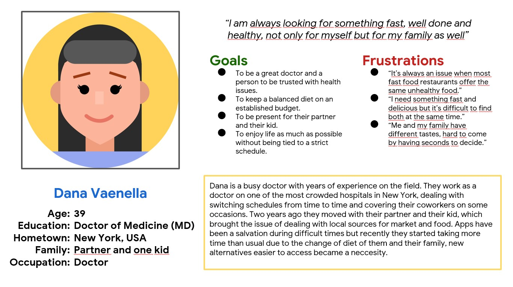

DETALLES DE PROYECTO
Tipo de proyecto: Proyecto personal.
Mis roles: Investigador - Entrevistador - Diseño UX - Diseño visual - Prototipos.
Duración: Julio a Septiembre 2022.
Herramientas: Figma.
La aplicación GSS fue desarrollada para hacer el proceso de ordenar comidas, compuestas de sanduches, bebidas y acompañamientos, rápido y eficiente para personas que trabajan y siguen horarios estrictos y/o tienen poco tiempo libre.
EL PROBLEMA
Debido a sus horarios de trabajo estrictos y actividades alternas durante su tiempo libre limitado, los usuarios no pueden tomar comidas saludables durante los recesos para ellos mismos ni sus familias.
EL OBJETIVO
Proporcionar a los usuarios la opción de armar comidas completas saludables rapidamente y que tengan la opción de guardar sus elecciones en una lista para acelerar el proceso a futuro.
INVESTIGACIÓN
El objetivo de la investigación es encontrar las necesidades y experiencias de los usuarios con soluciones previas ajenas al proyecto, este proceso se repitió con las propuestas iniciales de la aplicación, mediante entrevistas no moderadas, se hicieron estos hallazgos:
- No hay tiempo para cocinar: Todos los usuarios tienen poco o nada de tiempo para preparar alimentos apropiados en casa para poder llevarlos, esto debido a su tiempo limitado y actividades fuera del horario laboral.
- Almuerzos enviados a sus puestos de trabajo: Muchos usuarios no tienen tiempo de ir a restaurantes por sus comidas y necesitan que sean llevados a sus estaciones a tiempo.
- Dificultad en el uso: Algunos usuarios tienen conocimiento limitado de tecnología y necesitan soluciones en lenguaje para entender las aplicaciones.
- Información personal: Todos los usuarios tienen dudas respecto a dar información personal a apps si lo único que buscan es ordenar comida y nada más.
Personas + Mapa de proceso
Los resultados de las entrevistas ayudaron a desarrollar dos Personas. Con ello, para entender mejor su situación, se creó un mapa del proceso que siguen los usuarios en una aplicación para ordenar comida habitualmente.

 


Definición e ideación
Por la investigación que se realizó, se descubrió que los usuarios necesitan un proceso rápido para ordenar comida pero necesitan tener control en los ingredientes que estas llevan, al igual que comprender lo que hacen y por que, ante ello la solución debe proveer pasos definidos, fáciles de usar y que sigan un flujo eficiente:
- Para una gran parte de los usuarios el lenguaje es un problema, por ello se debe tener la opción de cambiar idioma a voluntad.
- La mitad de los usuarios tuvieron dudas sobre el método de pago, ante ello la necesidad de un proceso sencillo con ayudas en texto y video es necesario.
- La mayoría de los usuarios preguntaron sobre el manejo de su información personal, ante ello se presenta documentación legal al respecto al igual que una cantidad de información por parte del usuario limitada en favor de la funcionalidad de la app.
Como la aplicación puede mejorar las situaciones de:
VICTOR
- El uso de dos tonos contrastantes y asistencia en la navegación pueden ayudar a Victor con su necesidad con los colores y textos reducidos.
- La variedad de ingredientes y las opciones le permiten elegir comidas saludables para él y sus compañeros.
DANA
- La variedad de ingredientes, el proceso lineal sencillo le permiten ordenar sin perder tiempo innecesariamente.
- La opción de crear combos y guardar ordenes le permiten pedir comidas saludables para ella y para su familia.
DESARROLLO: WIREFRAMES

DESARROLLO: TEST DE AFINIDAD

Se realizaron dos test de usabilidad a 4 participantes cada sesión, los resultados fundamentaron los cambios definitivos en el desarrollo de la aplicación.
DESARROLLO: PROPUESTA FINAL


DESARROLLO: NAVEGACIÓN

Reflexiones
El desarrollo de esta aplicación me ha dejado ver una serie de procesos a seguir para lograr un objetivo que van más alla de la mentalidad del diseñador, en el que la empatía y la toma de desiciones se enfoca totalmente en el usuario.
La variedad de necesidades presentan un desafio considerable al momento de generar soluciones y escuchar todas ha sido una gran ayuda para este proyecto y en futuras empresas, analizar y condensar esa información con personas de mentes similares en conocimiento pero distintas en puntos de vista, es la mejor experiencia que cualquier integrante de un grupo que busca dar soluciones que mejoren las condiciones de las personas es siempre grato.